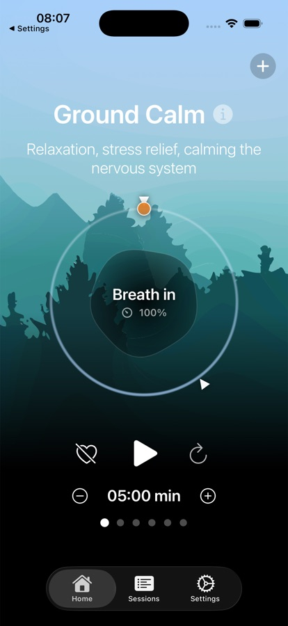
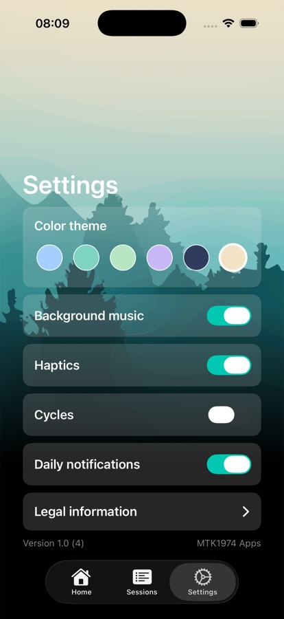
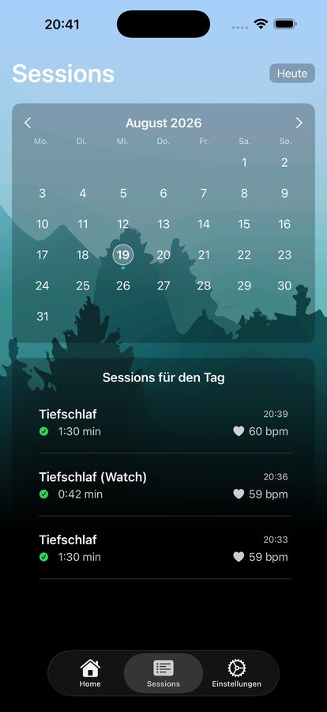

Kein Konto
Anamovo startet direkt — ohne Registrierung, ohne Anmeldung.
Für iPhone · iPad · Apple Watch
Anamovo begleitet dich mit geführten Atem- und Entspannungsübungen, misst auf Wunsch deine Herzfrequenz über Apple Watch oder AirPods Pro 3 — und bleibt dabei vollständig auf deinem Gerät.
Folge dem Punkt eine Runde lang mit — genau im 4-4-4-4-Sekunden-Takt, den auch die App für „Focus Box" nutzt.
Übungen
Starte mit sorgfältig gestalteten Übungen wie „Ground Calm" oder „Focus Box", oder stelle Atemrhythmus, Dauer und Zyklen frei nach deinem eigenen Tempo zusammen.

Herzfrequenz
Verbinde deine Apple Watch oder AirPods Pro 3, und Anamovo zeigt dir deine Herzfrequenz während der Übung — als sanfte Rückmeldung, kein Leistungswert.
Farbthemes
Wähle aus mehreren Farbthemes, die den Himmel hinter der App verändern — und mit ihm auch die Hintergrundmusik. Probier es gleich hier aus:

Erinnerungen & Verlauf
Lass dich sanft an deine Übung erinnern und sieh im Kalender, wann du dir Zeit genommen hast — jede Sitzung wird mit ihren Daten lokal gespeichert.

Privatsphäre
Anamovo startet direkt — ohne Registrierung, ohne Anmeldung.
Übungen, Herzfrequenzdaten und Verlauf verlassen dein Gerät nie.
Keine Analyse-Tools, keine Werbe-IDs, keine Weitergabe an Dritte.
Ein Erlebnis, drei Geräte